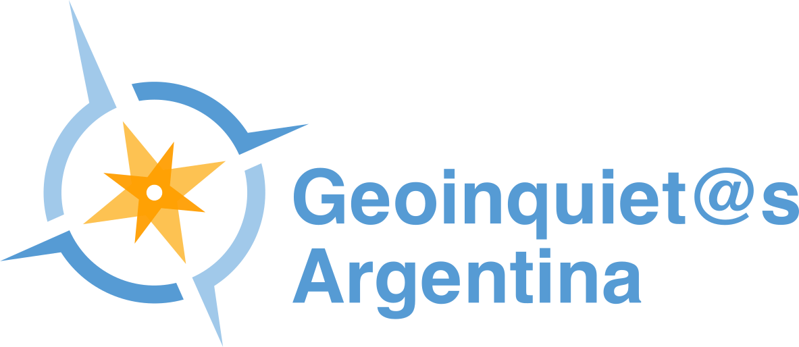
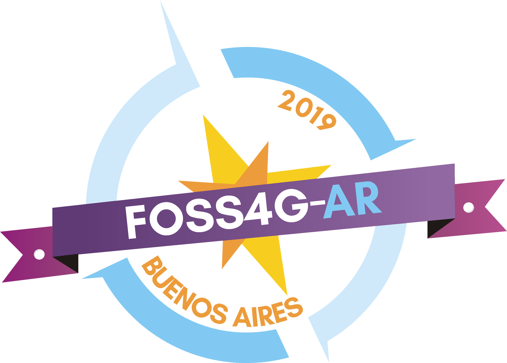

Software Libre y Apertura de Código
Conceptos básicos y dudas recurrentes

Libertad
¿Quién es libre? ¿De qué? ¿Por qué?
Libertades
Usar
Estudiar
Distribuir
Modificar
Beneficiarios
Usuario Final
Empresas
Organismos Públicos
¡NO QUIERO LIBERAR!
Ignorancia
Miedo
Corrupción
Falta de proveedores
¡Muchas Gracias!
